Most Notable Projects
================================================================================
For longer descriptions of those projects, scroll down to the description
section.
- AltCom.io
- Amethyst Engine
- Back2Life
- Game Features
- Heart Core
- Hoppin World
- Minigene
- Plank ECS
- ScalEngine
- Shotcaller
List Of All Active or Completed Projects
================================================================================
These projects, if not included in the Most Notable Projects section, *may* be
found in my portfolio with a description and pictures.
Table Of Content:
- AVX Hasher
- AltCom.io
- Amethyst Engine
- Amethyst-Extra
- Astar
- Back2Life
- Cryptocurrency Investing Automation
- Database Hasher
- Drop Your Balls
- Easy Colval
- Endless Worlds
- Game Features
- Half Caps
- Half Matrix
- Heart Core
- Hoppin World
- Inventory Managoat
- Kiss CommandLine Repository
- Laminar Proxy (Packet Rerouter)
- Minigene
- Partial Function
- Photon Incremental
- Plank ECS
- SEECoV.org
- Scal Engine
- Shotcaller
- Specs Declaration
- Specs Physics
- Specs WASM
- WASM Web Workers
- WebSocket Actix Receiver
- World Digger Ascii
- World Digger Mobile
- World of the Focks God
List Of Prototypes
================================================================================
The description of those projects can be found in the respective git
repositories at
https://git.jojolepro.com
Table Of Content:
- Airplane Incremental
- Atmospheres Barrier
- Backend Utils
- Blazing Net
- Clicker Strike Globally Overpowered
- Clicker Strike Globally Overpowered Scala
- Crazy Fall
- Dash Raid
- Dyna Maze
- Facebook Friend Bot
- Gravity Balls
- Hurtworld Plugins
- Image Gen
- Key Fall
- Lifer
- Ludumdare 42
- Ludumdare 43
- Ludumdare 44
- Musi Maze
- Operation Mudkir
- Osu Practice
- PersonSim
- Planet Digger Bot
- Poker Bot
- SCP EEE
- Spatial Flyer
- Taiko-Copy
- Throw Your Balls Out
- Tower Babel Bot
- Traveller Inc
- Ultra Jumper
- Unity Resources
- World Digger Amethyst
- Arduino Projects
- Dozen of others :)
Short Note
================================================================================
As you can easily notice, I made a *lot* of projects.
Most of them were never completed and probably never will be.
In the past, I used to dream big but change projects a lot, while nowadays
I aim at doing smaller projects with a very high focus on quality and
completion.
Descriptions of Notable Projects
================================================================================
AltCom.io
--------------------------------------------------------------------------------
Description: A website collecting statistics about people playing on dedicated
game servers. It provides statistics, achievements and a shop where you can buy
items from points bought or collected from unlocking achievements.
Technologies:
- PHP
- Laravel
- Paypal API
- Gnu/Linux LAMP + Postfix
- C#
- Oxide Mod API
- Reverse Engineering
Time Spent: Thousand hours.
Git: - (Commercial)
Images:
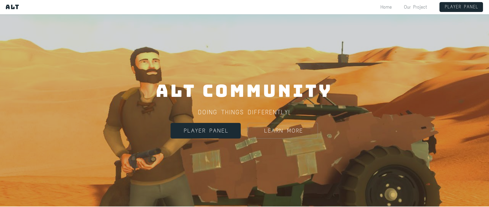
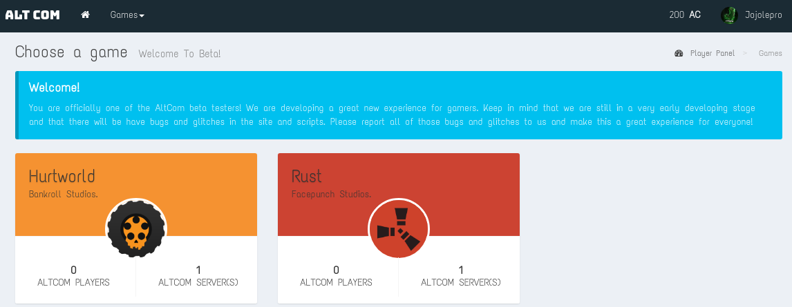
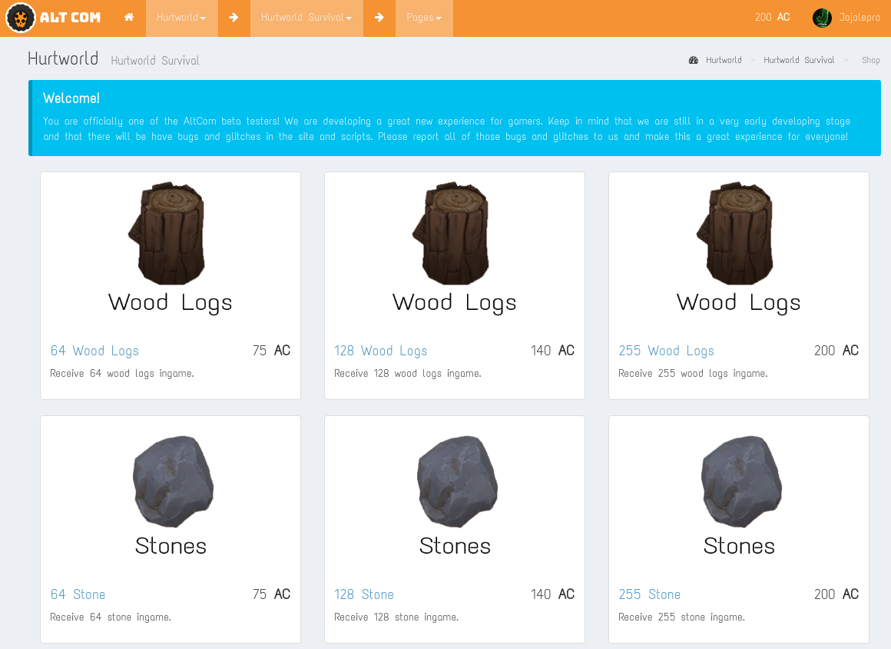
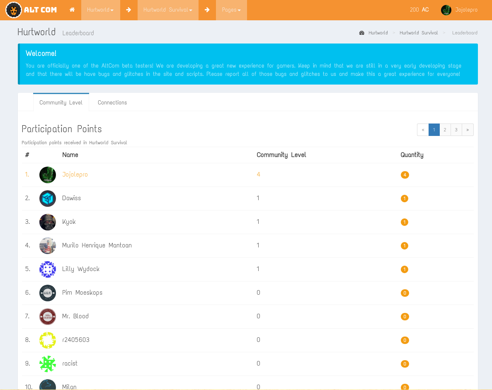
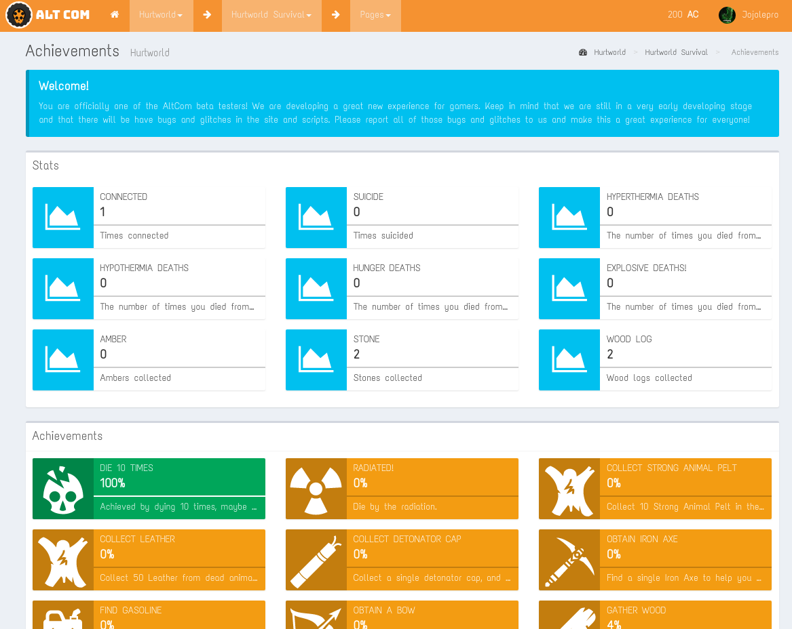
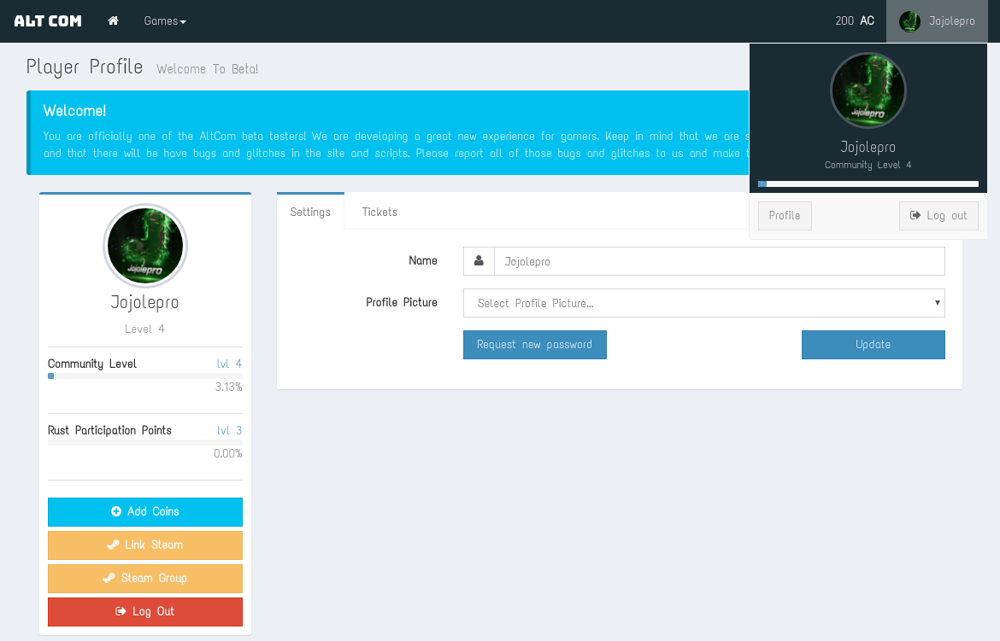
Videos:
https://youtu.be/oELsg7HBCCo
Amethyst Engine
--------------------------------------------------------------------------------
Description: A 3D ECS based open source game engine. I have been a lead
developer for multiple years.
Technologies:
- Rust
- OpenGL
- Vulkan
Time Spent: Thousands of hours.
Git:
https://github.com/amethyst/amethyst
Images:
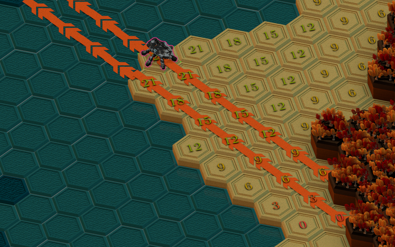
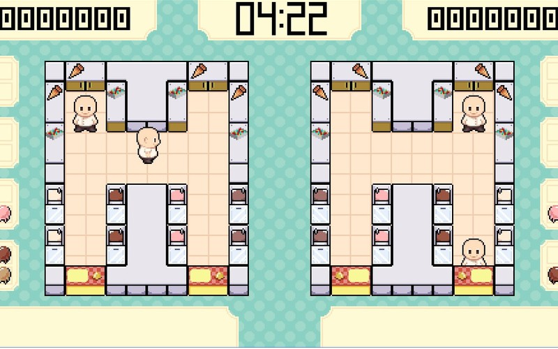
Videos:
https://raw.githubusercontent.com/amethyst/space-menace/master/demo.gif
Back2Life
--------------------------------------------------------------------------------
Description: 3D Multiplayer First Person Shooter game experiment. Has most core
features you expect from a modern FPS: Weapon spray, recoil, fire modes,
fire rate, ammo count, dynamic movement, animations, etc...
Technologies:
- Java
- JMonkeyEngine
- Custom Networking Code
Time Spent: 250+ hours.
Git:
https://github.com/jojolepro/b2l
Images:
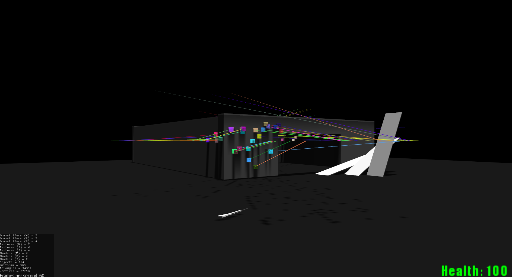
Videos:
https://youtu.be/Z8DZrxgHi84
Game Features
--------------------------------------------------------------------------------
Description: A collection of generic and *extremely* reusable features for
games. Contains the core logic that will fit with most games, starting from
extremely simple platformers all the way to complex MMORPG. Contains an
extensive inventory and item system, as well as spells, skills, levels, stats
and much more!
Technologies:
- Rust
Time Spent: 50+ hours.
Git:
https://github.com/jojolepro/game_features
Images:
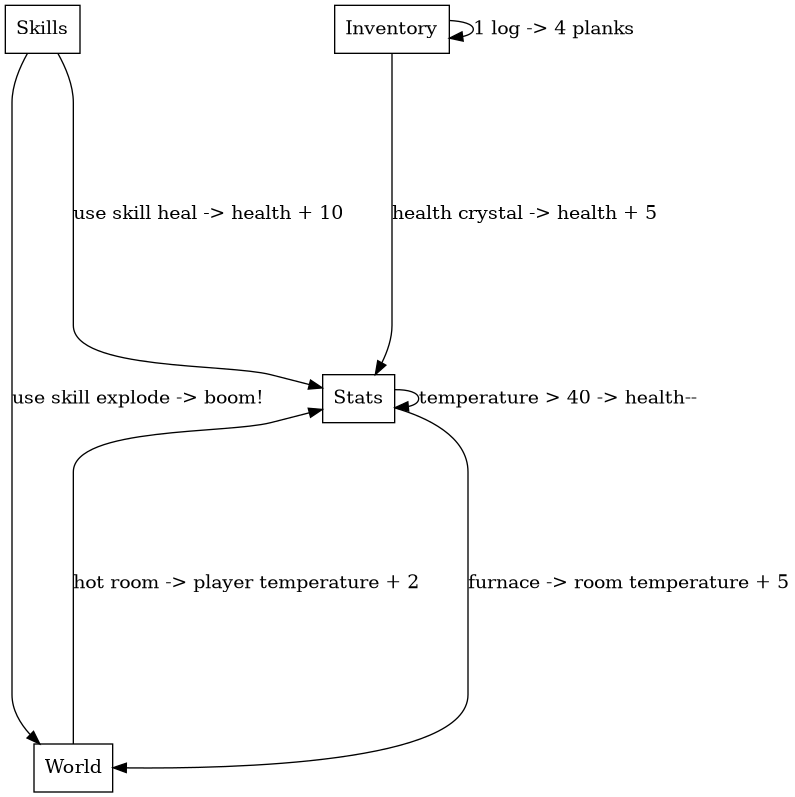
Videos: -
Heart Core
--------------------------------------------------------------------------------
Description: 2D platformer game made during a game jam.
Going through a variety of puzzles to complete while surviving dangerous
threats, you must survive and evolve your cybernetic core into something more...
living.
This game won us the third place in the competition.
Technologies:
- C#
- Unity Engine
Time Spent: 26 hours (solo), 182 hours (team's combined time).
Git: - (No permission to share code from the team members.)
Images:
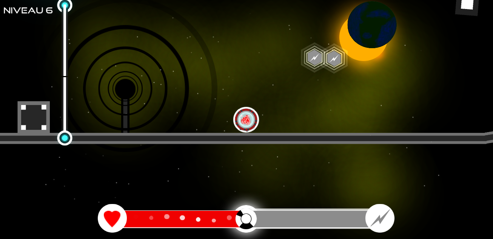
Videos:
https://youtu.be/VwAjpK45JMI
Hoppin World
--------------------------------------------------------------------------------
Description: 3D “bunny hopping” game. At the core, it is a platformer game
with a twist. Your base speed is slow, but you can get to very high speeds by
performing what is known as “air-strafing”. This is done by pressing the
movement key perpendicular to the direction vector, and moving the mouse in
that direction. (see showcase video.)
A full rewrite is underway using the Amethyst Engine.
Technologies:
- C#
- Unity Engine
- Rust
- Amethyst Engine
- Blender
Time Spent: 500+ hours (three rewrites)
Git:
https://github.com/hoppinworld
Images:
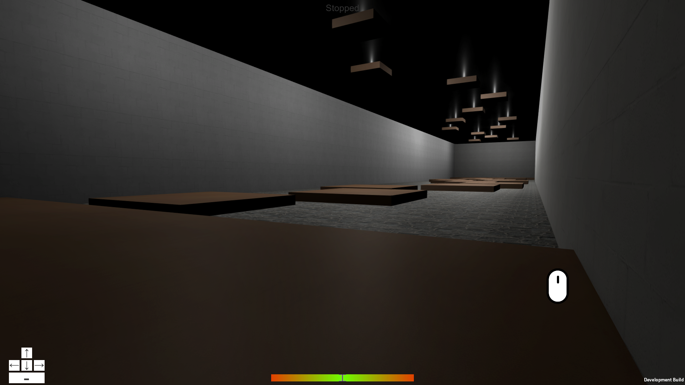
Videos:
https://youtu.be/8Jw-v2RPtvw
Minigene
--------------------------------------------------------------------------------
Description: A game engine specialized in 2d ascii and tiled games.
A heavy focus is given on prototyping speed and simplicity.
Technologies:
- Rust
- Plank ECS
- Amethyst
- Bracket Lib
- WASM
Time Spent: 100+ hours.
Git:
https://github.com/jojolepro/minigene
Images:
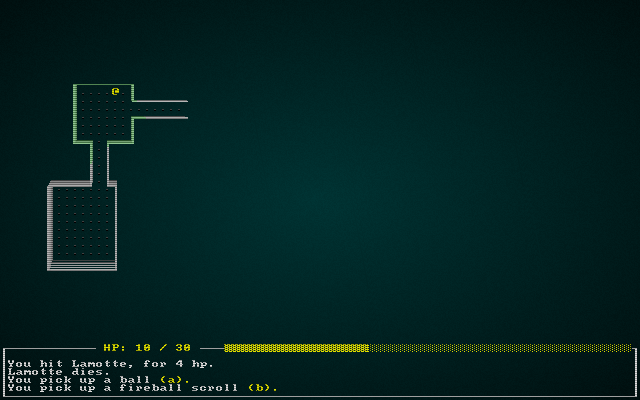
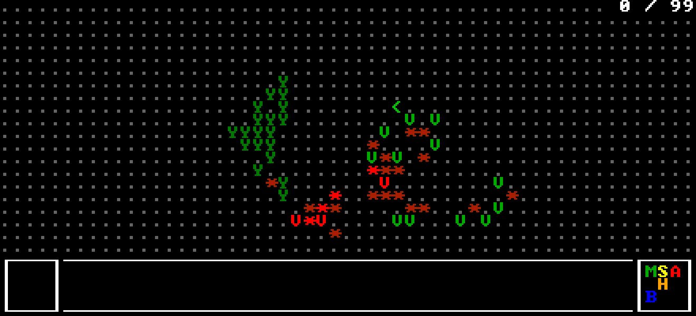
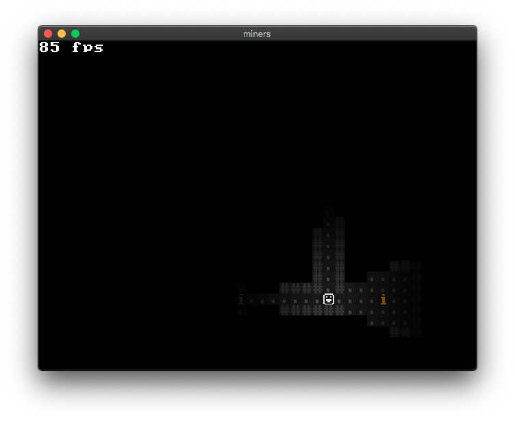
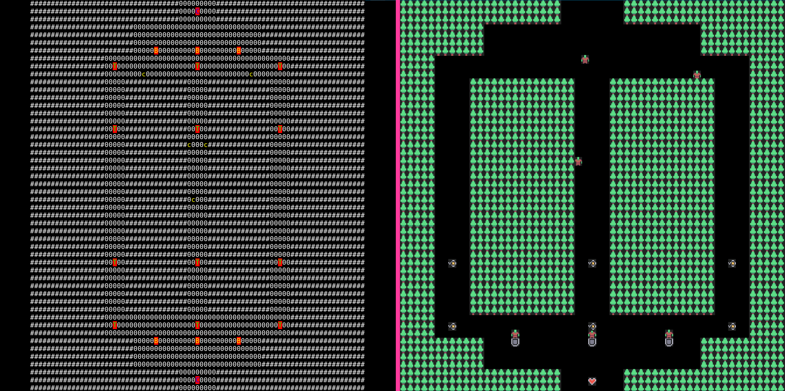
Videos: -
Plank ECS
--------------------------------------------------------------------------------
Description: An entity-component-system library with a very heavy focus on
simplicity, performance, safety and learnability. At the time of writing, it is
the second fastest Rust ECS, while having approximately 1000 lines of code.
It is also the safest ECS: it has only two or three unsafe operations (compared
to the usual 200 of other libraries). It is also the only ECS library where all
public functions are tested and/or benchmarked.
Technologies:
- Rust
Time Spent: 100+ hours.
Git:
https://git.jojolepro.com/plank_ecs
Images: -
Videos: -
ScalEngine
--------------------------------------------------------------------------------
Description: 3D Game engine written in Scala. Originally actor based
(Akka framework), then ECS (Entity-Component-System) based.
Though it was never completed, the engine had 3d text and model rendering, a 3d
.obj loader, a fly camera (first-person) and Bullet based physics.
Technologies:
- Scala
- OpenGL
- Akka
- Bullet
Time Spent: 500+ hours.
Git:
https://github.com/jojolepro/ScalEngine
Images: -
Videos:
https://www.youtube.com/watch?v=Zj2sPz5xJDY
(It might look horrible, but the features are there. You can see I'm no artist.)
Shotcaller
--------------------------------------------------------------------------------
Description: An RTS / MOBA game with multiple frontends: ASCII-rendered or
tiles-rendered.
Technologies:
- Rust
- Minigene
- Plank ECS
Time Spent: 100+ hours.
Git:
https://github.com/amethyst/shotcaller
Images:
Videos:
https://github.com/amethyst/shotcaller/blob/master/media/shotcaller-prototype.m